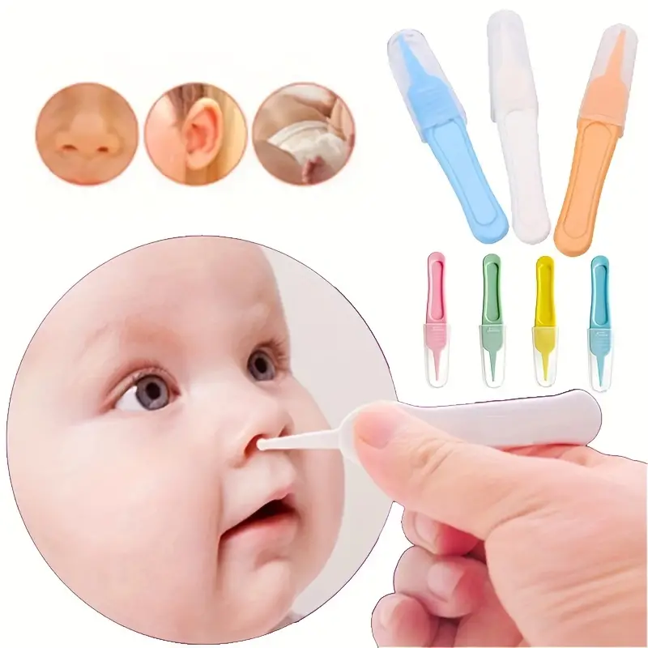

¿Como es la higiene del bebé

La higiene de la piel de un bebé se basa en el baño diario, una vez se haya caído el cordón umbilical y quede cicatrizado el ombligo. Se recomienda realizar el baño con agua a 36-37 ºC, con una temperatura ambiental aproximada de 20 ºC y a la misma hora.
Principales cuidados de los recién nacidos y lactantes
Limpiar el cordón con una gasa mojada en alcohol de 70
Vigilar si hubiese secreción lagrimal espesa
Mantener las mucosas nasales húmedas, aplicando 2-3 veces al día unas gotas de suero fisiológico.
Bañar a diario sólo con agua, incluida la cabeza.
Cosas de aseo para bebés
Toallitas húmedas. Son de los productos de aseo que más va a necesitar un bebé, en especial durante sus primeros años de vida. ... Jabón neutro, Shampoo, Cepillo y peine, Tina, Cortauñas, Crema hidratante, Crema para la colita.
Consejos para bañar a tu bebé sin dañar la piel
Elige un momento tranquilo para bañar al bebé:da igual que sea por la mañana o por la noche, lo importante es que sea un momento relajado e íntimo y tenga lugar sin distracciones ni prisas.
Cuida la temperatura de la habitación: es recomendable que la estancia en la que bañas al bebé tenga unos 23ºC y no tenga corrientes de aire.
Utiliza una bañera adecuada: conviene que no incluya ningún material tóxico, no tenga partes puntiagudas, y sea sólida y estable.
Examina la temperatura del agua
Controla el tiempo de duración del baño: en los primeros baños del bebé es recomendable que no se prolonguen más de dos minutos.
Seca al bebé sin frotar con la toalla
Hidrata la piel del bebé
Higiene y cuidado del ombligo del bebé

Limpia diariamente la zona con agua y jabón
Evita la humedad en esa zona
No utilices ombligueros ni fajas, ya que pueden favorecer infecciones y además dificultar la respiración del bebé.
Presta atención a cualquier cambio de estado de esa zona: si observas secreciones, sangre o mal olor, acude inmediatamente a tu pediatra ya que podría haber una infección.
Da toquecitos en sentido circular alrededor de la base del ombligo, sin hacer contactos prolongados con la piel del bebé.
Nunca uses productos con yodo, opta solo por el alcohol o la clorhexidina, siguiendo siempre las instrucciones de tu pediatra.
Higiene del bebé en orejas, nariz, ojos y dientes
Cómo cuidar de la zona del pañal
Cambia de pañal al bebé frecuentemente
No abuses de las toallitas higiénicas o limpies la zona en exceso
Limpia el área usando agua y jabón neutro
Limpia la zona desde adelante hacia atrás
Una vez limpia, seca bien la zona para evitar humedad.
Elige pañales testados clínica y dermatológicamente